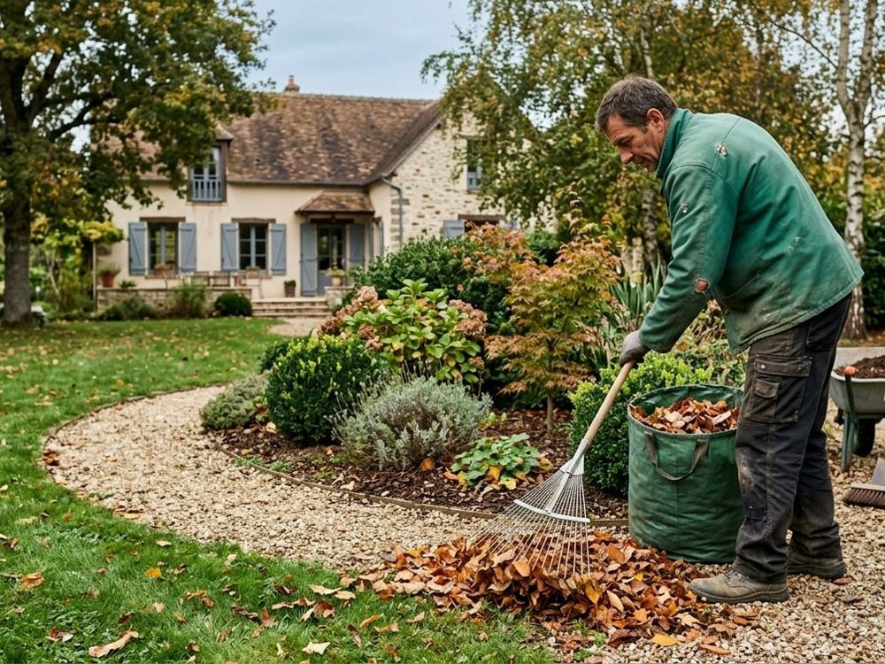
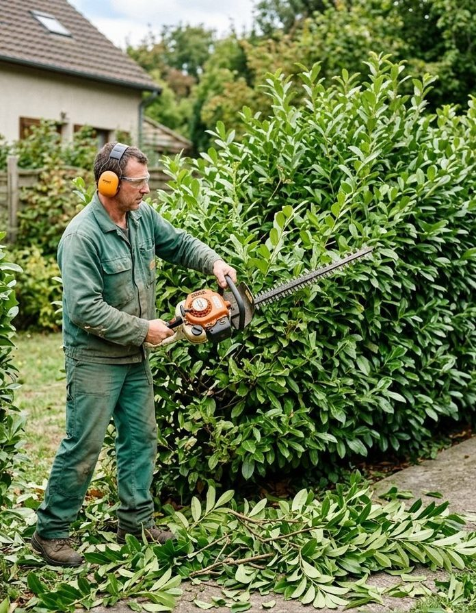

Création de jardins
Massifs, pelouses et allées : l'aménagement se pense selon votre terrain.
En savoir plusPaysagiste à Saint-Léger-en-Yvelines (78)
LGC Garden aménage et entretient vos jardins à Saint-Léger-en-Yvelines et aux alentours.



Nos prestations
Du projet de jardin à son entretien régulier.
Massifs, pelouses et allées : l'aménagement se pense selon votre terrain.
En savoir plus

À propos
LGC Garden est une entreprise d'aménagement paysager installée à Saint-Léger-en-Yvelines, dans les Yvelines.
Louka Le Govic, dirigeant
Appelez-nous pour décrire votre projet et demander un devis.
Création et entretien de jardins à Saint-Léger-en-Yvelines (78).